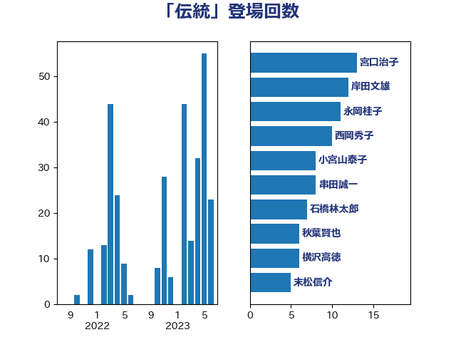

単語「伝統」

| 宮口治子 | 立憲民主党 | 13 回 |
| 岸田文雄 | 自由民主党 | 12 回 |
| 永岡桂子 | 自由民主党 | 11 回 |
| 西岡秀子 | 国民民主党 | 10 回 |
| 小宮山泰子 | 立憲民主党 | 8 回 |
| 串田誠一 | 日本維新の会 | 8 回 |
| 石橋林太郎 | 自由民主党 | 7 回 |
| 秋葉賢也 | 自由民主党 | 6 回 |
| 横沢高徳 | 立憲民主党 | 6 回 |
| 末松信介 | 自由民主党 | 5 回 |
| 若宮健嗣 | 自由民主党 | 4 回 |
| 福島みずほ | 社会民主党 | 4 回 |
| 田中英之 | 自由民主党 | 4 回 |
| 梅村みずほ | 日本維新の会 | 4 回 |
| 林芳正 | 自由民主党 | 4 回 |
| 川崎ひでと | 自由民主党 | 4 回 |
| 坂井学 | 自由民主党 | 4 回 |
| 古賀之士 | 立憲民主党 | 4 回 |
| 赤池誠章 | 自由民主党 | 3 回 |
| 西村康稔 | 自由民主党 | 3 回 |
| 神谷宗幣 | 参政党 | 3 回 |
| 斉藤鉄夫 | 公明党 | 3 回 |
| 山谷えり子 | 自由民主党 | 3 回 |
| 吉田とも代 | 日本維新の会 | 3 回 |
| 上野通子 | 自由民主党 | 3 回 |
| 高橋英明 | 日本維新の会 | 2 回 |
| 高木宏壽 | 自由民主党 | 2 回 |
| 長浜博行 | 無所属 | 2 回 |
| 長友慎治 | 国民民主党 | 2 回 |
| 鎌田さゆり | 立憲民主党 | 2 回 |
| 鈴木宗男 | 日本維新の会 | 2 回 |
| 野村哲郎 | 自由民主党 | 2 回 |
| 近藤和也 | 立憲民主党 | 2 回 |
| 足立康史 | 日本維新の会 | 2 回 |
| 谷川とむ | 自由民主党 | 2 回 |
| 西田昌司 | 自由民主党 | 2 回 |
| 藤木眞也 | 自由民主党 | 2 回 |
| 穀田恵二 | 日本共産党 | 2 回 |
| 秋野公造 | 公明党 | 2 回 |
| 福田昭夫 | 立憲民主党 | 2 回 |
| 福島伸享 | 無所属 | 2 回 |
| 石垣のりこ | 立憲民主党 | 2 回 |
| 本村伸子 | 日本共産党 | 2 回 |
| 市村浩一郎 | 日本維新の会 | 2 回 |
| 山本啓介 | 自由民主党 | 2 回 |
| 小野泰輔 | 日本維新の会 | 2 回 |
| 小倉將信 | 自由民主党 | 2 回 |
| 嘉田由紀子 | 無所属 | 2 回 |
| 勝目康 | 自由民主党 | 2 回 |
| 務台俊介 | 自由民主党 | 2 回 |
| 中川宏昌 | 公明党 | 2 回 |
| 高橋光男 | 公明党 | 1 回 |
| 高木真理 | 立憲民主党 | 1 回 |
| 馬場雄基 | 立憲民主党 | 1 回 |
| 馬場伸幸 | 日本維新の会 | 1 回 |
| 須藤元気 | 無所属 | 1 回 |
| 音喜多駿 | 日本維新の会 | 1 回 |
| 青柳仁士 | 日本維新の会 | 1 回 |
| 鈴木義弘 | 国民民主党 | 1 回 |
| 野間健 | 立憲民主党 | 1 回 |
| 野田国義 | 立憲民主党 | 1 回 |
| 辻元清美 | 立憲民主党 | 1 回 |
| 越智俊之 | 自由民主党 | 1 回 |
| 赤羽一嘉 | 公明党 | 1 回 |
| 藤田文武 | 日本維新の会 | 1 回 |
| 落合貴之 | 立憲民主党 | 1 回 |
| 菊田真紀子 | 立憲民主党 | 1 回 |
| 荒井優 | 立憲民主党 | 1 回 |
| 臼井正一 | 自由民主党 | 1 回 |
| 緑川貴士 | 立憲民主党 | 1 回 |
| 紙智子 | 日本共産党 | 1 回 |
| 笠浩史 | 無所属 | 1 回 |
| 窪田哲也 | 公明党 | 1 回 |
| 福山哲郎 | 立憲民主党 | 1 回 |
| 神田潤一 | 自由民主党 | 1 回 |
| 石橋通宏 | 立憲民主党 | 1 回 |
| 石川昭政 | 自由民主党 | 1 回 |
| 石川大我 | 立憲民主党 | 1 回 |
| 石井準一 | 自由民主党 | 1 回 |
| 田村貴昭 | 日本共産党 | 1 回 |
| 浜田聡 | NHK党 | 1 回 |
| 浜地雅一 | 公明党 | 1 回 |
| 浅川義治 | 日本維新の会 | 1 回 |
| 横山信一 | 公明党 | 1 回 |
| 柿沢未途 | 無所属 | 1 回 |
| 枝野幸男 | 立憲民主党 | 1 回 |
| 東国幹 | 自由民主党 | 1 回 |
| 杉田水脈 | 自由民主党 | 1 回 |
| 本田太郎 | 自由民主党 | 1 回 |
| 日下正喜 | 公明党 | 1 回 |
| 新垣邦男 | 立憲民主党 | 1 回 |
| 岩渕友 | 日本共産党 | 1 回 |
| 岡田直樹 | 自由民主党 | 1 回 |
| 山岸一生 | 立憲民主党 | 1 回 |
| 山口晋 | 自由民主党 | 1 回 |
| 山下芳生 | 日本共産党 | 1 回 |
| 小西洋之 | 立憲民主党 | 1 回 |
| 小沢雅仁 | 立憲民主党 | 1 回 |
| 小川淳也 | 立憲民主党 | 1 回 |
| 小寺裕雄 | 自由民主党 | 1 回 |
| 寺田静 | 無所属 | 1 回 |
| 宮本岳志 | 日本共産党 | 1 回 |
| 塩田博昭 | 公明党 | 1 回 |
| 塩村あやか | 立憲民主党 | 1 回 |
| 堀場幸子 | 日本維新の会 | 1 回 |
| 城井崇 | 立憲民主党 | 1 回 |
| 國重徹 | 公明党 | 1 回 |
| 吉川ゆうみ | 自由民主党 | 1 回 |
| 古賀千景 | 立憲民主党 | 1 回 |
| 北神圭朗 | 無所属 | 1 回 |
| 勝部賢志 | 立憲民主党 | 1 回 |
| 伊藤渉 | 公明党 | 1 回 |
| 今井絵理子 | 自由民主党 | 1 回 |
| 仁比聡平 | 日本共産党 | 1 回 |
| 上川陽子 | 自由民主党 | 1 回 |